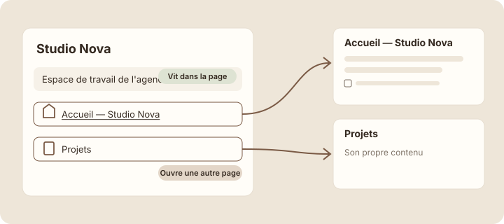
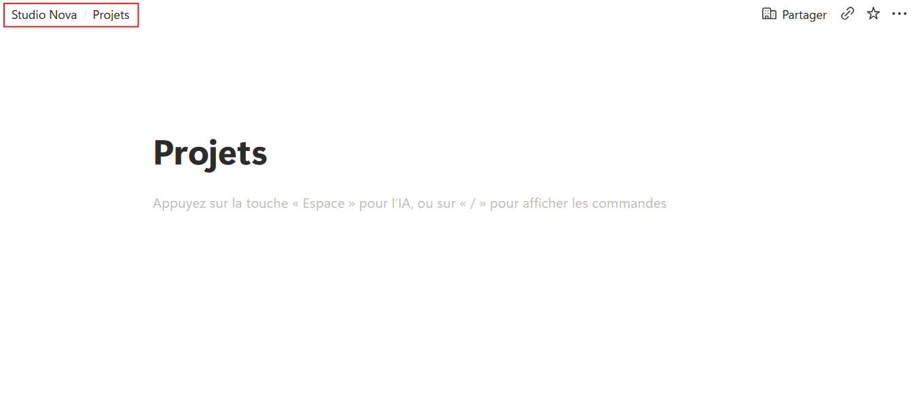
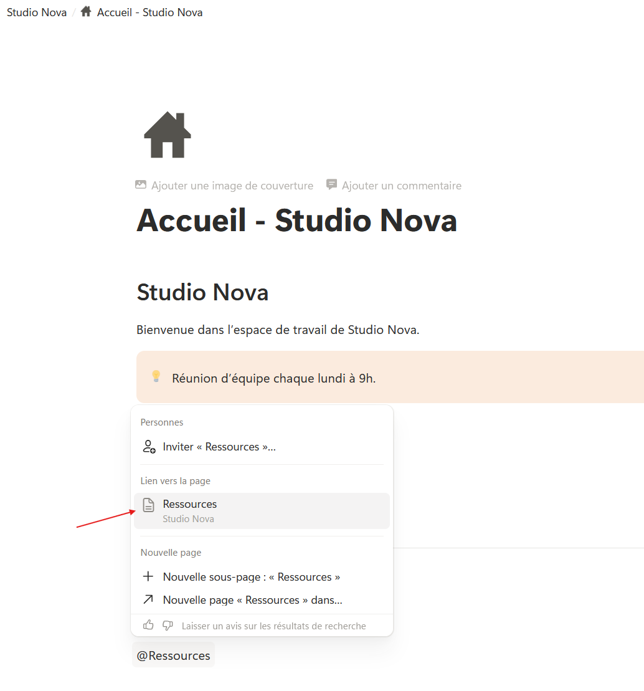

Créer une sous-page
Étape 1 : comprendre
Ta page d'accueil est prête, mais Studio Nova aura besoin d'autres pages : les projets, les ressources, les notes. Pour que tout reste rangé au même endroit, ces pages vont vivre à l'intérieur de la page « Studio Nova ».
Une sous-page est une page rangée à l'intérieur d'une autre page. Tu en as déjà créé une sans le savoir : « Accueil — Studio Nova » est une sous-page de « Studio Nova » (leçon 2.2).
Depuis l'intérieur d'une page, tape « /page » : Notion crée une sous-page et l'ouvre. Dans la page de départ, elle apparaît comme une ligne avec une petite icône de document : c'est un bloc page. Un clic dessus ouvre la sous-page.
C'est la différence essentielle de ce module :
- un bloc de contenu (texte, titre, liste, encadré…) vit dans la page. Il fait partie de ce que tu lis ;
- un bloc page est une porte vers une autre page, qui a son propre titre et son propre contenu.
Une sous-page peut elle-même contenir des sous-pages, sans limite. Dans la barre latérale, la petite flèche devant une page affiche les pages qu'elle contient.
Pour faire un lien vers une page qui existe déjà, tape « @ » suivi du début de son titre, puis choisis-la dans la liste. Tu verras les liens en détail au module 3.

Un bloc de contenu fait partie de la page ; un bloc page ouvre une autre page.
Attention : supprimer un bloc page supprime la sous-page et tout ce qu'elle contient. Elle part dans la Corbeille. Avant de supprimer une ligne avec une icône de document, vérifie que tu veux vraiment supprimer toute la page.
L'espace Studio Nova et ses sous-pages
Survole chaque ligne de la page « Studio Nova », puis clique sur un bloc page pour l'ouvrir. Tu peux aussi naviguer avec la fausse barre latérale.
Créer « Projets » et « Ressources », puis les relier à l'accueil
- Ouvre ta page « Studio Nova ». Clique sur une ligne vide en bas de la page.
- Tape « /page » et appuie sur Enter. Une nouvelle page vide s'ouvre.
- Donne-lui le titre « Projets ». Elle restera vide jusqu'au module 4, où tu y créeras la base des projets.

- Clique sur « Studio Nova » dans le fil d'Ariane pour revenir à la page principale. La ligne « Projets » y est apparue, avec une icône de document.
- Recommence pour créer la sous-page « Ressources ».
- Ouvre ta page « Accueil — Studio Nova ». Sous le séparateur, ajoute un titre 2 « Liens utiles ».
- En dessous, tape « @Projets » et choisis la page « Projets » dans la liste. Va à la ligne et fais de même avec « @Ressources ».

- Clique sur le lien « Projets » : tu arrives sur la sous-page.
Astuce : le fil d'Ariane, en haut de l'écran, est le moyen le plus rapide de remonter d'une sous-page vers la page qui la contient.
Exercice · dans Notion
Les sous-pages de Studio Nova
- Dans « Studio Nova », crée les sous-pages « Projets » et « Ressources » avec « /page ».
- Dans l'Accueil, ajoute la section « Liens utiles » avec un lien vers chacune.
- Dans la barre latérale, déplie « Studio Nova ».
Résultat attendu : sous « Studio Nova », la barre latérale affiche trois pages : « Accueil — Studio Nova », « Projets » et « Ressources ». La page d'accueil se termine par « Liens utiles », avec deux liens qui ouvrent ces pages.
Étape 3 : vérifier
Objectif de la leçon
Tu sais maintenant créer une sous-page depuis l'intérieur d'une page, y mener un lien, et faire la différence entre une page et un bloc de contenu.
Choisis une réponse avant de valider.
L'icône de document signale un bloc page. Un clic dessus ouvre la sous-page « Projets », qui a son propre contenu.
Choisis une réponse avant de valider.
Le bloc page et la sous-page ne font qu'un. Supprimer l'un supprime l'autre. Heureusement, la page reste récupérable dans la Corbeille, ou avec Ctrl + Z tout de suite.